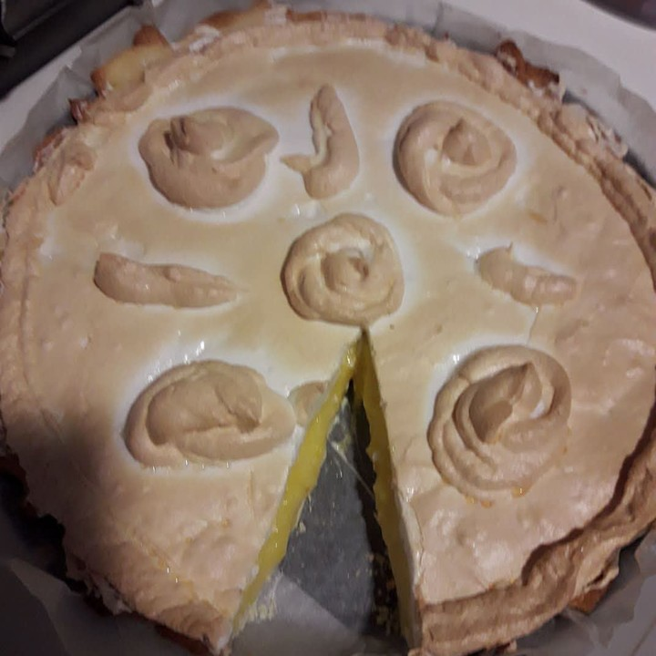
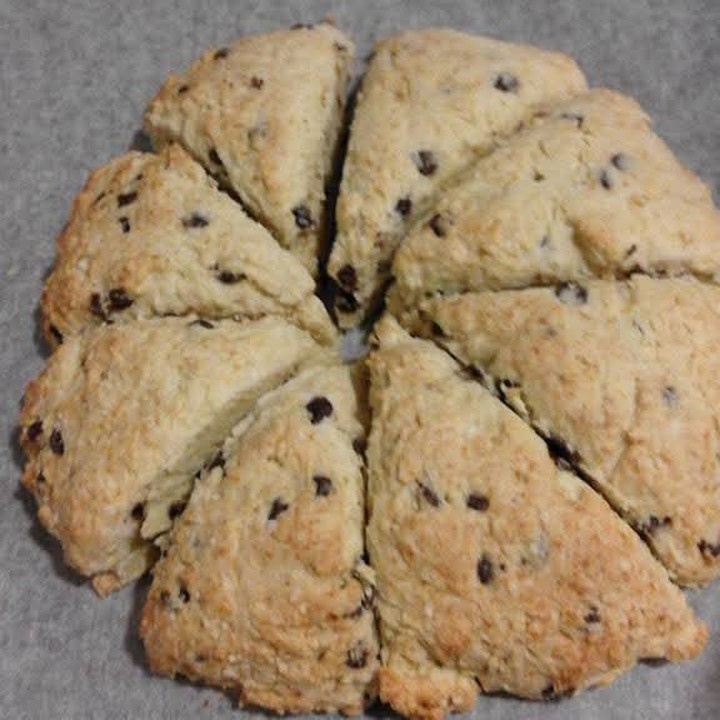
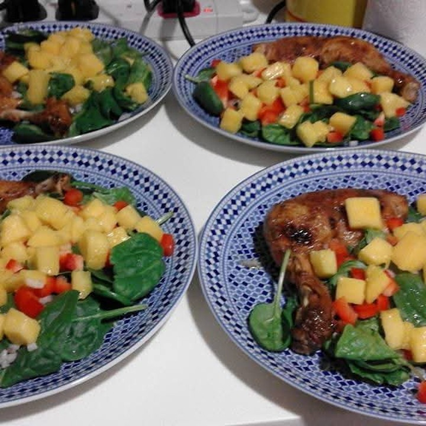

Filipino · 43 · Newborns, young children & cooking
Seven and a half years with one family, who put a recommendation in writing — twenty-two years in Singapore in all, newborns taken in three of her households, and a baker who makes her own tarts, meringue and scones.
Trust signals
Our strongest trust signal — an employer of seven and a half years, in writing and willing to take a call.
At a glance
The essentials
Available from
17 December 2026. Transfer within Singapore.
Seven and a half years, one family
November 2016 to June 2024 — a French family and their two children, whom she took from birth and left at seven and five. The recommendation on this page is theirs.
Where she is now
Since June 2024 — a French family of three in a condominium, with their child, now about four. They are moving to Paris.
Newborns
Three of her households — a baby of six months, a newborn with a family of four, and the first of the two French children from birth. It is the work she asks for first.
Children she has cared for
From birth to eight — and children of thirteen and fifteen in an earlier household. She puts her own range at newborn to eight, and says so plainly.
Cooking & baking
Chinese, Western and Indian, and she bakes properly — apple tart, lemon meringue, scones, cakes, and pizza from scratch. Photographs below.
What she does not do
No pets, no eldercare, and she would rather be the only helper in the house. She is clear about all three, and we would rather you knew them at the outset.
Twenty-two years in Singapore
Since May 2004. Her employment record carries eight households across that time, two of them over four years each.
In Singapore since May 2004 — and seven and a half years in one of her homes.
2004 to 2007. Her first three years in Singapore, across three households — a landed home and two flats. She returned in 2009.
November 2009 to April 2014 — four and a half years. A Chinese family of six in a landed house, with three children of eight, thirteen and fifteen, and the cooking and the house besides.
April 2014 to May 2015. An Indian family and their baby, who was six months old when she arrived. They left for the United States.
May 2015 to November 2016. A Romanian family with two children, the younger a newborn and the elder three. They moved to Bangkok.
November 2016 to June 2024 — seven years and seven months. The French family who wrote the letter on this page. She took their first child as a newborn and their second after him, and left when they were seven and five: the house, the marketing, the cooking and, in their employer’s own words, most importantly the children. One unbroken registration across the whole of it, which is the plainest thing on this page in her favour.
June 2024 to now. A French family of three in a condominium, with their child, now about four. They are moving to Paris, which is why she is available.
Where she’d suit next. A family with a baby, or with small children. She asks for a newborn herself, and has taken three of them; her range runs to about eight. She cooks across Chinese, Western and Indian food and bakes rather better than most. No pets, no eldercare, and she would rather be the only helper in the house.
Aurelie’s letter, her details for a reference call, and the full employment record are available to interested families, with Generose’s consent.
Photographs Generose took of her own cooking — an apple tart, a lemon meringue pie, chocolate-chip scones, pizza from scratch, chicken with mango salsa, and a beef and rice-noodle salad.



Tell us a little about your household and we’ll be in touch within 1–2 business days. We’ll only move forward if it feels like a genuine fit.